📍 Finca Tropic I, S.A.
Herdade Á-de-Mateus
Longueira – Almograve
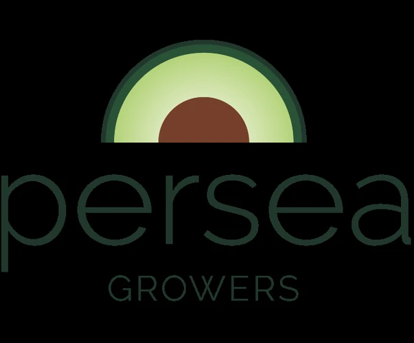
O Grupo Persea desenvolve a sua atividade agrícola no concelho de Odemira, produzindo abacate e partilhando uma visão de agricultura moderna, responsável e ligada ao território.
Duas explorações, uma mesma visão: produzir com qualidade, respeitando os recursos naturais e as pessoas.
Conheça a localização das duas explorações do Grupo Persea no Sudoeste Alentejano.
Herdade Á-de-Mateus
Longueira – Almograve
Herdade do Bico Torto
São Teotónio
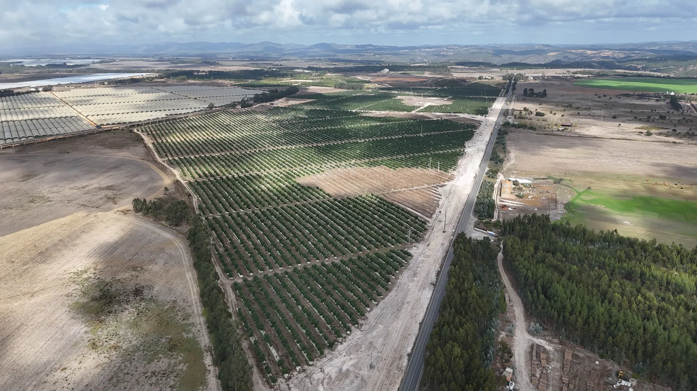
Uma exploração jovem, dedicada à produção de abacate no coração do Sudoeste Alentejano.
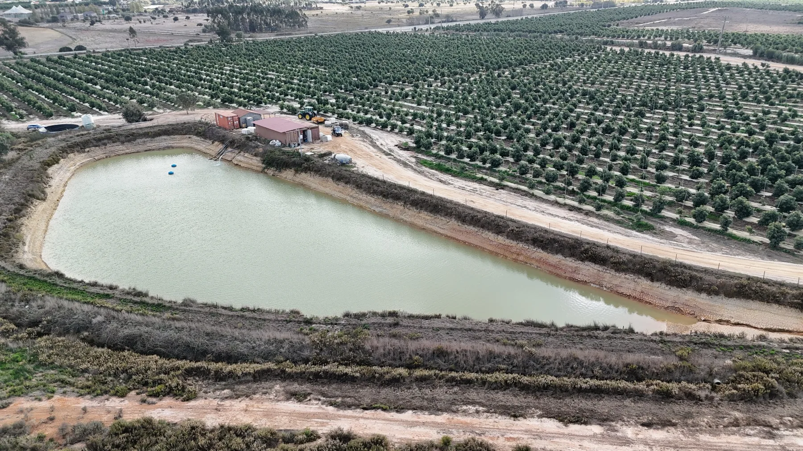
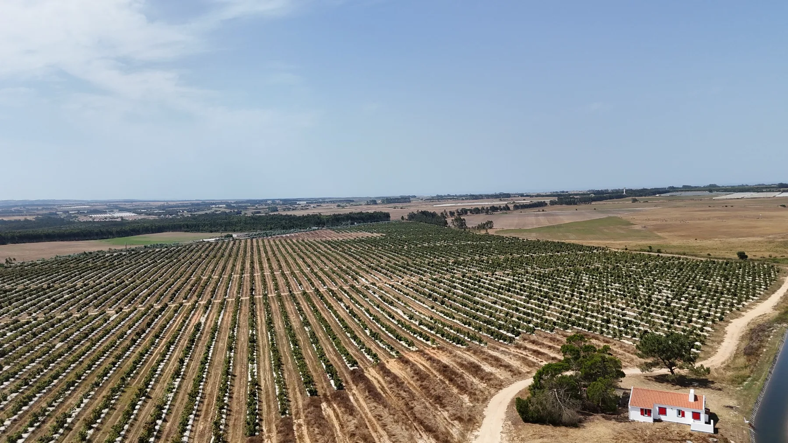
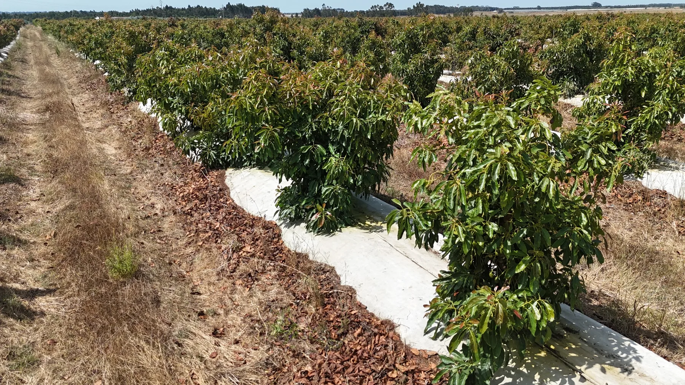
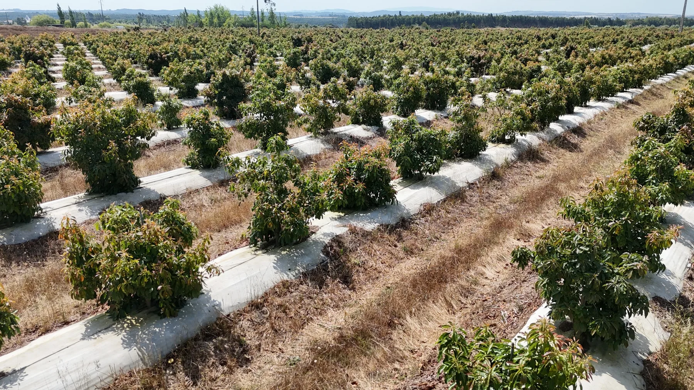
Uma exploração criada de raiz para a produção de abacate, onde o desenvolvimento do pomar acompanha uma aposta contínua na qualidade e na certificação.
Quer saber mais sobre gestão da água, sustentabilidade, certificações ou ligação à comunidade?
Fale com a Vicentina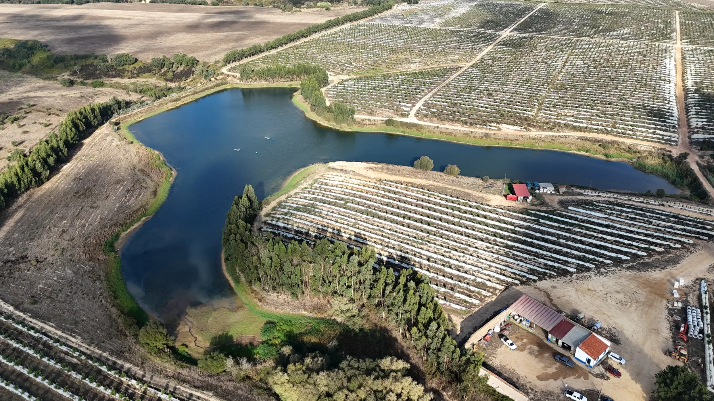
Uma exploração agrícola em renovação, onde a tradição dá lugar a uma nova geração de pomares de abacate.
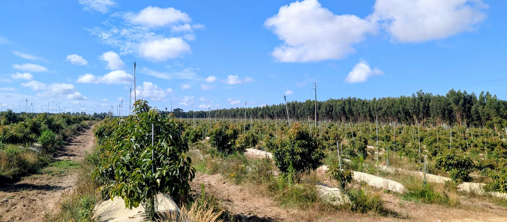
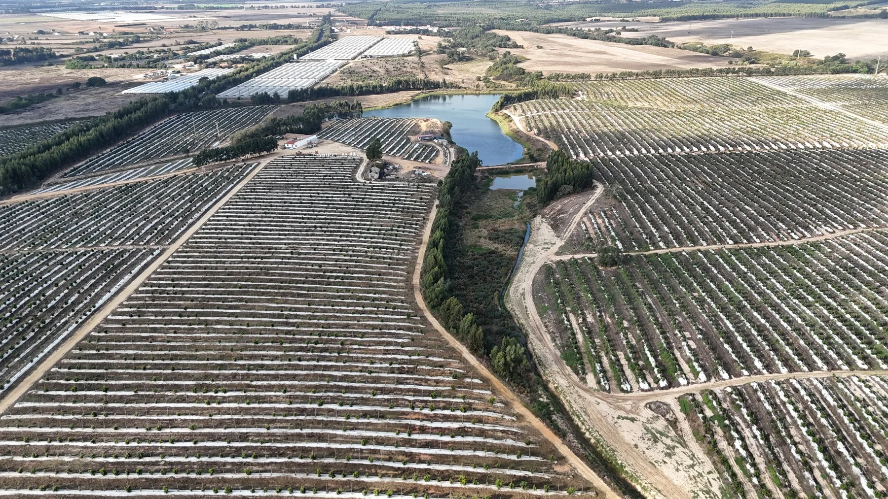
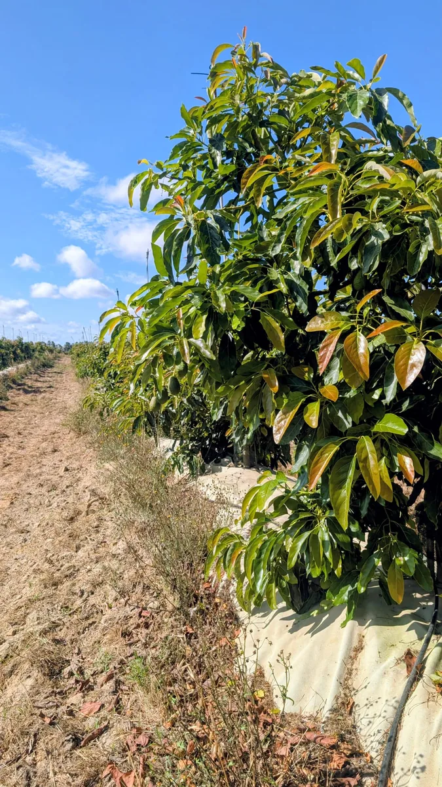
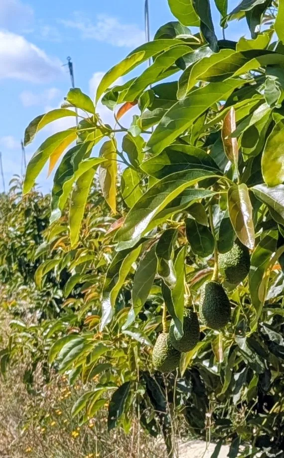
Integrada no Grupo Persea em 2021, a Extraissol iniciou uma nova fase da sua história agrícola, com a reconversão progressiva da exploração para a produção de abacate.
Descubra mais sobre a evolução da exploração, as práticas agrícolas e a forma como os recursos são geridos.
Fale com a VicentinaAs certificações apresentadas correspondem à situação indicada para cada exploração e podem evoluir ao longo do tempo.
Grupo Persea · Sudoeste Alentejano